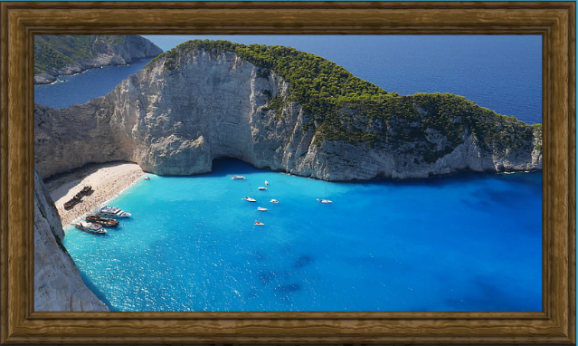
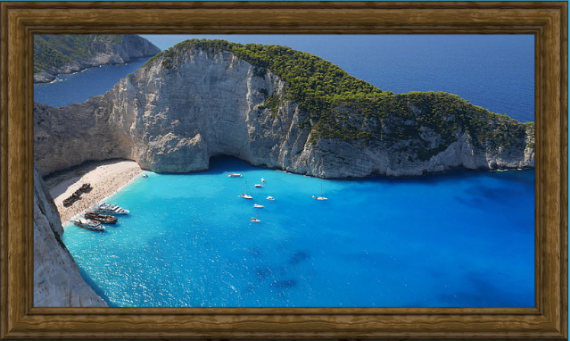

Home
A minha cidade é muito linda!!!
Sobre Atenas
Atenas, capital da Grécia, é uma cidade histórica conhecida como o berço da democracia e da filosofia ocidental. Famosa por monumentos como a Acrópole e o Partenon, combina a rica herança da Grécia Antiga com uma vida urbana moderna e vibrante. Para saber mais: Atenas